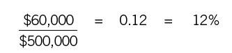
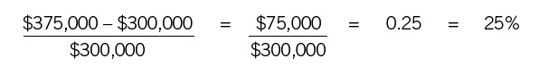

Toolbox
Variance just means difference. It might be the difference between budget and actual for the month or year, between actual this month and actual last month, and so on. It can be presented in dollars or percentages, or both. Percentages are usually more useful, because they provide a quick and easy basis of comparison between the two numbers.
The only difficulty with variance when you are reading a financial report lies in determining whether a variance is favorable or unfavorable. More revenue than expected, for instance, is favorable, while more expense than expected is unfavorable. Sometimes the folks in finance are helpful and let you know in a note that a variance enclosed in parentheses or a variance preceded by a minus sign is unfavorable. But often you have to figure it out on your own. We recommend doing a few calculations, figuring out whether the indicated variances are bad or good, then checking to see how they are displayed. Be sure to do the calculations for both a revenue line item and an expense line item. Sometimes parentheses or negative signs indicate the mathematical difference, not favorable or unfavorable. In that case, parentheses for a revenue line item might mean favorable, while parentheses for an expense line item might mean unfavorable.
Nonprofit organizations use the same financial statements as for-profit companies, including the income statement. They also have a bottom line indicating the difference between revenue and expenses, just like for-profit companies. Sometimes the bottom line has a different label, but it is still a profit or a loss. And the fact is, a nonprofit organization needs to earn a profit. How can it survive over the long haul if it doesn’t bring in more than it spends? It has to earn a surplus to invest in its future. The only difference is that a nonprofit can’t distribute the profit to its owners, because it doesn’t have owners. And of course it doesn’t pay taxes. We often call nonprofits “nontaxed” organizations, which is really what they are.
Over the years, several nonprofits have hired our company to train their employees in finance. Why would a not-for-profit hire us to teach finance? The most common answer is that the organization is not making enough money to survive, and management wants to boost everyone’s financial intelligence. It’s just as important in this context as it is in the for-profit business world.
A QUICK REVIEW: “PERCENT OF” AND “PERCENT CHANGE”
Two common ways to analyze income statements are “percent of” and “percent change.” Everybody learns these calculations in school, but you may have forgotten them. So take a quick look if you need to refresh your memory.
A percent of calculation tells you what percentage one figure is of another. For example, if you spent $60,000 on materials last year and the year’s revenue was $500,000, you might want to know what percent of your revenue went for materials. The calculation is as follows:

Percent change, in contrast, is the percentage by which a figure changed from one period to the next or from budget to actual. The formula for percent change from one year to the next is as follows:
For example, if last year’s revenue was $300,000 and this year’s was $375,000, then the percent change is as follows:
